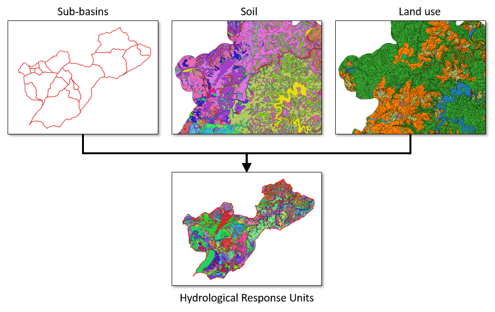

HRU calculation¶
HRU calculation is one functionality of the QGIS plugin QTalsim designed to create hydrological response units (HRUs) suitable for Talsim. The plugin processes three layer, including a sub-basin layer, soil layer and land use layer. It clips the layers in accordance with the sub-basin layer’s boundaries. The plugin then intersects those three layers and creates HRUs. Additionally, the plugin offers functionality to remove duplicate geometries, overlapping features and unwanted gaps.
 Input:
Sub-basin layer
Soil layer
Land use layer
CSV-file containing talsim land use types and parameters
Output:
Geopackage containing HRU, land use, soil texture and soil type layers
Layers are also added to the current QGIS project